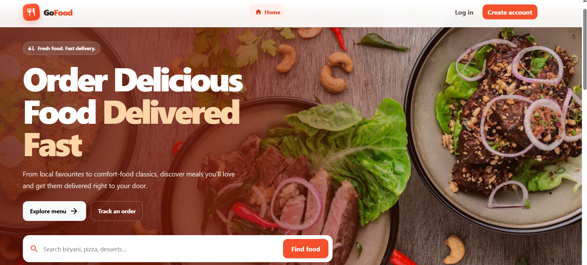
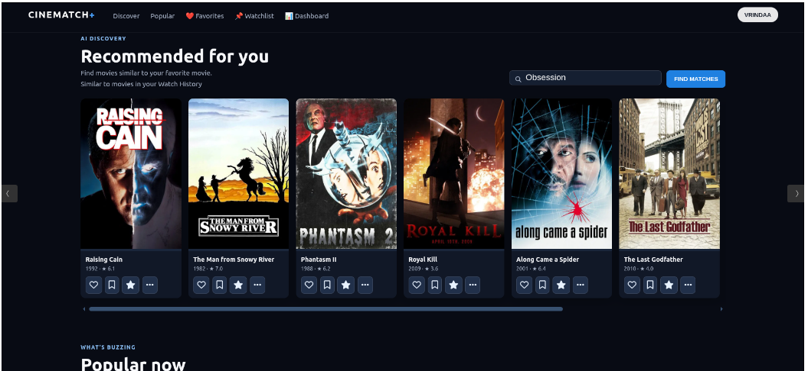
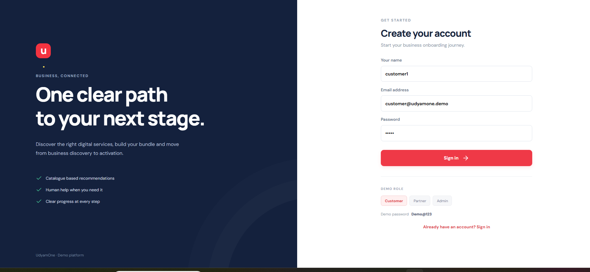

PROJECT 01 FOOD & COMMERCE
GoFood
A food ordering web application concept that makes it easy to browse a menu and discover something delicious.
Explore on GitHubA few things I’ve been working on
A selection of projects that help me learn, experiment, and turn everyday problems into useful digital experiences.

PROJECT 01 FOOD & COMMERCE
A food ordering web application concept that makes it easy to browse a menu and discover something delicious.
Explore on GitHub
PROJECT 02 ENTERTAINMENT
A movie recommendation application concept designed to help people find their next favorite film.
Explore on GitHub
PROJECT 03 BUSINESS & COMMUNITY
From Business Discovery to Digital Activation: a concept to help businesses get discovered and build a digital presence.
Explore on GitHubThese are learning projects, and I’m always improving them as my skills grow.
Let’s connect